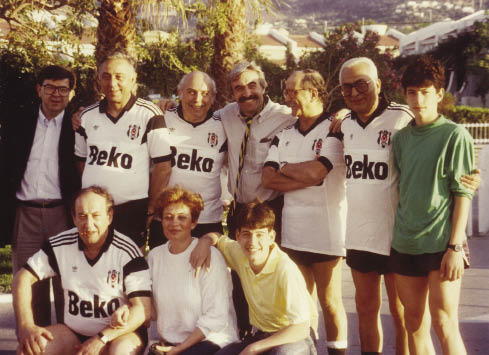

“Muflon”u ben kelime olarak ta çocukluğumdan, kürklü deri olarak hatırlarım. Hatta içi kürklü potinlere (ayakkabı) muflonlu potin de denirdi.
1997’nin yazında, Girne’deki Milli Arşiv’de çalışırken kitaplardan birinde bir hayvan resmi gördüm. Keçiye benziyordu, boynuzları vardı. Resmin altındaki bilgiyi okuyunca “muflon”un Kıbrıs adasına has, “boynuzlu bir koyun” olduğunu öğrendim. Bu bir koyundu (koç değil) ve upuzun yay gibi kıvrılan sağlı sollu iki boynuzu vardı. Çok düzgün, başın üstünde önce yukarı giden, yükselip bir yay gibi tekrar aşağı dönen boynuzları ve haşmetli yapısı mağrur bir hava veriyordu muflona.
O kadar yıldır Kıbrıs’a geliyordum, bu keçi benzeri koyunu görmemiş ve adada adını duymamıştım. Merak ettim, soruşturmaya başladım. Neydi, neyin nesiydi, dinozorlar gibi nesli mi tükenmişti?
Soruşturunca neslinin tükendiğini anladım. Bu vahşi bir hayvandı ve dağlarda, özellikle insanların zor ulaşabildiği yüksek bölgelerde yaşıyordu. Trodoslar’da çok az sayıda görülüyordu. Bazen Türk tarafına, KKTC’ye de geçtiği söyleniyordu.
Muflonun fotoğrafından bile anlaşılan haşmetli, mağrur görünüşü beni çok etkiledi. Çocukluğumdan beri giyim eşyalarından adını duyduğum ve ne olduğunu bilmediğim bu mağrur görünüşlü hayvanı elli yıl sonra keşfetmiştim. Hem de Kıbrıs’ta. Çocuksu bir sevince kapılmıştım. Bugün insanlar bu hayvanı unutmuşlardı. Herkesin unuttuğu, kimsenin varlığından haberdar olmadığı bir şeyi, ben kendimce yeniden keşfetmiştim.
Bu keşfimi taşlara kazımalı, oymalı, resmetmeliydim. Öyle ya, üç beş yıldır hobi olarak boş zamanlarda taşlar üzerine kabartmalar yapıyordum. Amatör de olsam biraz elimden geliyordu. Elim yatkındı. Ertesi gün Kıbrıs’ta, Ercan’ın doğusunda çıkan, çıktığında yumuşak olan, sonra zamanla sertleşen beyaz taşa kabartma bir muflon yaptım. Yontarken muflonun baş kısmının yarısı kırıldı. Ben de eski görüntüsü verdim ve taşın diğer kısımlarını da ona göre yonttum. İki karış büyüklüğündeki bu kabartma hoşuma gitti. Demir oksitli kırmızı toprak da yedirerek beyaz taşı alacalı kahverengi bir tona dönüştürdüm. “Eserimi” bahçede duvarın üzerine koydum ve seyretmeye başladım. Keyif vericiydi.
Ertesi günü Denktaş’ın evine öğle yemeğine davetli idim. Eşimle birlikte yemeğe giderken birden aklıma geldi. Muflonu Denktaş’a armağan etmeliydim. Bana göre çiçek veya çikolatadan daha değerliydi. Benim emeğimdi ve ayrıca güzel hayvanın bildiğim hikâyesini Başkan’a anlatacaktım. Denktaş’ın yazlık ikametgâhına vardığımızda aklıma bir muziplik geldi. Bir iki dakika için olsa da Başkan’ı kandıracaktım. Muflonu torbadan çıkardım ve Denktaş’a sundum ve “Sayın Başkan, evin arka bahçesini kazarken bakın yerin altından ne çıktı; bunu size getirdim,” dedim. Denktaş muflona baktı, bir yorumda bulunmadı. Sonra bana baktı; ne diyecekti bilemiyorum ama o daha bir şey söylemeden, “Sayın Başkan, dün ben yaptım, size armağan etmek istedim,” dedim. Güldü, teşekkür etti ve oturma odasındaki kütüphanenin rafına itina ile koydu.
Denktaş, taş oyma işlerinin elimden geldiğini biliyordu. Bizim mütevazı evimizi ziyaret ettiği zamanlarda yaptığım diğer taş oymaları kendisine göstermiştim.
Birkaç gün sonra Başkan’ın danışmanlarından bir profesör ile karşılaştım. Bana ilk söylediği şu oldu: “Sayenizde Başkan tarafından fena halde işletildim”. Önce ne demek istediğini anlamadım. Sonra kendisi gülerek anlattı. Çalışma için Başkan’a gittiğinde, Denktaş kendisine benim muflonu göstererek; “Bak bakalım, şu taşı bin İngiliz’e (Sterlin) dün aldım. Eski bir antika parçaymış, ne diyorsun?” demiş. Danışman dostum muflona yaklaşmış, başlamış incelemeye. Bakmış eski gibi görünüyor ama taş oymalarda keskin hatlar var, eski olması zor: Ancak emin değil, emin olsa bile Başkan’a sizi kandırmışlar demek de biraz nezaket dışı olacak, bir yorum yapıp yapmamakta kararsız, düşünürken Denktaş muflonun benim eserim olduğunu gülerek söyleyivermiş.
Sonraki haftalarda duyduğuma göre Denktaş aynı espriyi birkaç dostuna daha yapmış.
Bunlar aslında Denktaş’ın ince mizahi kişiliğini yansıtan örnekler. Bir hadisenin mizahi bir noktasını yakalayınca bunu çevresindekilerle paylaşmaktan zevk alan bir insan. Bu çevresindekilerin, mutlaka yakın dostları da olması gerekmez. Makaryos ile görüşmelerinde, B.M. Genel Sekreteri ile buluşmalarında mutlaka bir ince nokta yakalar ve bazen dünya siyasi mizah tarihine örnek olacak benzetmeler ve espriler yaratır.

13 Mayıs 1990, Celebrity Hotel, Girne-Kıbrıs Beşiktaş’ın şampiyonluğunu kutluyoruz,
Şahin Alpay, Nüsret Ekin, Halit Refiğ, Cengiz Çandar, Mümtaz Soysal, Yüksel Ülken,
Barış Manisalı, Erol Manisalı,Nuriye Manisalı, Kunter Manisalı